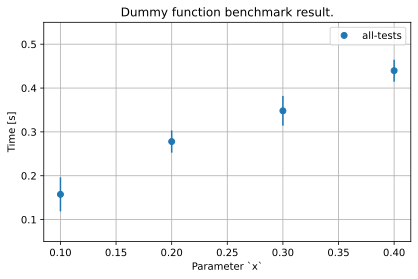

Benchmark#
ESS is built for various types of experiments with multiple instruments using different techniques.
Benchmarking was needed to make sure the data reduction frameworks can handle the streaming data in real time.
We will monitor the two types of computing costs, time and space(memory) of workflows.
Running Benchmarks#
Benchmark tests and related tools are collected in tests/benchmarks and tests/prototypes of the repository.
Benchmark Session#
BenchmarkSession is the entry point to run benchmark tests.
BenchmarkSession is a bridge object that connects FileManager, BenchmarkReport and BenchmarkRunner instances. Therefore session carries all other components, session.report, session.runner and session.file_manager as its fields.
BenchmarkSession is a nested dataclass and it is meant to be built by dependency injection. create_benchmark_session_factory is a helper to build a beamlime.constructor.Factory with all necessary providers to build BenchmarkSession object.
[2]:
from rich.pretty import Pretty
from tests.benchmarks.runner import create_benchmark_session_factory, BenchmarkSession, AutoSaveFlag
benchmark_session_factory = create_benchmark_session_factory()
# Disable auto-save.
with benchmark_session_factory.constant_provider(AutoSaveFlag, False):
session = benchmark_session_factory[BenchmarkSession]
Pretty(session, max_depth=1)
[2]:
BenchmarkSession( report=BenchmarkReport(...), runner=<tests.benchmarks.runner.SimpleRunner object at 0x7f3f14f0a650>, file_manager=<tests.benchmarks.runner.SimpleFileManager object at 0x7f3f14f0a410>, configurations=BenchmarkSessionConfiguration(...) )
Here is the simple use case of session.run.
[3]:
def test_func(x: float) -> float:
from time import sleep
import random
sleep(x)
sleep(random.random()*0.1) # noqa: S311
return x
session.run(test_func, 0.1)
Pretty(session.report.measurements)
[3]:
{'time': {'value': [0.15580129623413086], 'unit': ['s']}, 'space': {'value': [None], 'unit': [None]}}
The session.run passes all arguments to session.runner and append its result into the session.report.
You can use session.configure to temporarily update configurations.
[4]:
with session.configure(iterations=2): # Run the benchmark twice.
session.run(test_func, 0.2)
Pretty(session.report.measurements)
[4]:
{ 'time': {'value': [0.15580129623413086, 0.20254111289978027, 0.2681553363800049], 'unit': ['s', 's', 's']}, 'space': {'value': [None, None, None], 'unit': [None, None, None]} }
Note that each iteration appends the result separately, instead of deriving average results and save the number of iteration together.
It is because these tools are intended for time-consuming tests, in the scale of minutes and hours.
If you need multi-thousands iterations similar to timeit, you can write a special runner to do so.
See Exercies: TimeIt Runner as an example.
BenchmarkRunner#
The BenchmarkRunner should be a callable that returns a SingleRunReport, that can be appended to the BenchmarkReport.
Here is the simple use case of the runner.
[5]:
from tests.benchmarks.runner import BenchmarkRunner
runner = benchmark_session_factory[BenchmarkRunner] # SimpleRunner
single_report = runner(test_func, 0.1)
Pretty(single_report)
[5]:
SingleRunReport( callable_name='test_func', benchmark_result=BenchmarkResult(time=TimeMeasurement(value=0.16660332679748535, unit='s'), space=None), arguments={'x': 0.1}, output=0.1 )
BenchmarkRunner is meant to be customized for various purposes and more complicated benchmarks.
See tests/prototypes/prototype_mini.py and tests/prototypes/prototype_test.py for more complicated use-cases.
Here is a simple exercise of customizing runners.
Exercise: TimeIt Runner#
If you want to benchmark more than hundreds of iterations on the same target, it might not be ideal to append each result to the report.
Let’s write a runner that works with timeit.
It should also have iterations in the report.
Since it is not part of arguments of the target function, it would better be added in the measurements.
Note that all measurement types need to have value and unit fields.
[6]:
from tests.benchmarks.runner import BenchmarkRunner, SingleRunReport, TimeMeasurement, BenchmarkResult, BenchmarkTargetName
from collections.abc import Callable
from dataclasses import dataclass
@dataclass
class Iterations:
value: int
unit: str = 'counts'
# Extended benchmark result container.
@dataclass
class TimeItBenchmarkResult(BenchmarkResult):
iterations: Iterations | None = None
# Customized benchmark runner.
class TimeItRunner(BenchmarkRunner):
def __call__(self, func: Callable, iterations: int, **kwargs) -> SingleRunReport:
from functools import partial
from timeit import timeit
target = partial(func, **kwargs)
result = timeit(target, number=iterations)
return SingleRunReport(
callable_name=BenchmarkTargetName(func.__name__),
arguments=kwargs,
benchmark_result=TimeItBenchmarkResult(
TimeMeasurement(result, 's'),
iterations = Iterations(iterations),
),
output=target(),
)
# Build the benchmark session with the customized runner and run the tests.
with benchmark_session_factory.temporary_provider(BenchmarkRunner, TimeItRunner):
timeit_session = benchmark_session_factory[BenchmarkSession]
timeit_session.configurations.auto_save = AutoSaveFlag(False)
timeit_session.run(test_func, 100, x=0.001)
Pretty(timeit_session.report.measurements)
[6]:
{ 'time': {'value': [5.409378084999986], 'unit': ['s']}, 'space': {'value': [None], 'unit': [None]}, 'iterations': {'value': [100], 'unit': ['counts']} }
Benchmark Report#
The report is a container of benchmark results.
BenchmarkReport should have append method that receives a SingleRunReport and save in itself.
It is not expected to be customized so often so it has its own implementation.
It has four dataclass fields, environment, target_names, measurements and arguments.
[7]:
Pretty(session.report, max_depth=1)
[7]:
BenchmarkReport(environment=BenchmarkEnvironment(...), target_names=[...], measurements={...}, arguments={...})
environment is a static field that has information of the hardware it is running on, and other fields contain benchmark results.
target_names, measurements and arguments are similar to Series or DataFrame of pandas.
It is for exporting the report as a pandas.DataFrame. The exported pandas.DataFrame will be then converted to scipp.Dataset for further visualization with plopp.
Here is the example of the full contents of the report.
[8]:
# Example of the benchmark report.
Pretty(session.report)
[8]:
BenchmarkReport( environment=BenchmarkEnvironment( benchmark_run_id='1911be691928419f932c66165dd55e53', git_commit_id='056cd0a3a503f206689d63b1275fd57c83775eb1', timestamp='2024-10-28T15:09:52+00:00', hardware_spec=HardwareSpec( operating_system='Linux', operating_system_version='#26~22.04.1-Ubuntu SMP Thu Jul 11 22:33:04 UTC 2024', platform_desc='Linux-6.5.0-1025-azure-x86_64-with-glibc2.35', machine_type='x86_64', total_memory=TotalMemory(value=16, unit='GB'), cpu_spec=CPUSpec( physical_cpu_cores=PhysicalCpuCores(value=2, unit='counts'), logical_cpu_cores=LogicalCpuCores(value=4, unit='counts'), process_cpu_affinity=ProcessCpuAffinity(value=4, unit='counts'), maximum_frequency=MaximumFrequency(value=0.0, unit='MHz'), minimum_frequency=MinimumFrequency(value=0.0, unit='MHz') ) ) ), target_names=['test_func', 'test_func', 'test_func'], measurements={ 'time': { 'value': [0.15580129623413086, 0.20254111289978027, 0.2681553363800049], 'unit': ['s', 's', 's'] }, 'space': {'value': [None, None, None], 'unit': [None, None, None]} }, arguments={'x': [0.1, 0.2, 0.2]} )
Benchmark File Manager#
BenchmarkFileManager.save should receive a BenchmarkReport and save it.
It is also not expected to be customized very often.
By default, it saves a result under .benchmarks/ directory as a json file.
If you want to choose a different directory to save the benchmark result, replace the provider of BenchmarkRootDir.
To avoid unnecessary file handling in the example, we will define a context manager that temporarily saves the results in the current directory here:
[9]:
from contextlib import contextmanager
@contextmanager
def temporary_save(*sessions):
import os
original_file_path = {
i_session: session.file_manager.file_path
for i_session, session in enumerate(sessions)
}
for i_session, session in enumerate(sessions):
session.file_manager.file_path = Path('./result-%d.json' % i_session)
session.save()
yield None
for i_session, session in enumerate(sessions):
os.remove(session.file_manager.file_path)
session.file_manager.file_path = original_file_path[i_session]
Benchmark Result Loader#
Benchmark loader, tests.benchmarks.loader can reconstruct BenchmarkReport(ReportTemplate) from a saved json file. ReportTemplate can be exported as a pandas.DataFrame.
[10]:
from dataclasses import asdict
from tests.benchmarks.loader import reconstruct_report
Pretty(reconstruct_report(asdict(session.report)), max_depth=1)
[10]:
ReportTemplate(environment=BenchmarkEnvironment(...), target_names=[...], measurements={...}, arguments={...})
You can merge multiple reports into one data frame.
Let’s merge reports from session and timeit_session.
Note that NaN will be filled, if there is a missing columns in the report compared to other reports.
[11]:
from tests.benchmarks.loader import merge_measurements
df = merge_measurements({
'simple': reconstruct_report(asdict(session.report)),
'timeit': reconstruct_report(asdict(timeit_session.report)),
})
df
[11]:
| time [s] | x | target-name | environment | iterations [counts] | |
|---|---|---|---|---|---|
| 0 | 0.155801 | 0.100 | test_func | BenchmarkEnvironment(benchmark_run_id='1911be6... | NaN |
| 1 | 0.202541 | 0.200 | test_func | BenchmarkEnvironment(benchmark_run_id='1911be6... | NaN |
| 2 | 0.268155 | 0.200 | test_func | BenchmarkEnvironment(benchmark_run_id='1911be6... | NaN |
| 3 | 5.409378 | 0.001 | test_func | BenchmarkEnvironment(benchmark_run_id='ab06a83... | 100.0 |
You can also easily load and merge all reports from a single directory like this:
[12]:
import os
from pathlib import Path
from beamlime.constructors import Factory
from tests.benchmarks.loader import loading_providers, MergedMeasurementsDF, BenchmarkRootDir
result_factory = Factory(loading_providers)
with temporary_save(session):
with result_factory.constant_provider(BenchmarkRootDir, Path('./')):
# Replace './' with the path to the directory containing the saved results.
df = result_factory[MergedMeasurementsDF]
df
[12]:
| time [s] | x | target-name | environment | |
|---|---|---|---|---|
| 0 | 0.155801 | 0.1 | test_func | BenchmarkEnvironment(benchmark_run_id='1911be6... |
| 1 | 0.202541 | 0.2 | test_func | BenchmarkEnvironment(benchmark_run_id='1911be6... |
| 2 | 0.268155 | 0.2 | test_func | BenchmarkEnvironment(benchmark_run_id='1911be6... |
Let’s run more tests for visualization example.
[13]:
with session.configure(iterations=3):
for i in range(4):
session.run(test_func, 0.1+i*0.1)
with temporary_save(session):
with result_factory.constant_provider(BenchmarkRootDir, Path('./')):
# Replace './' with the path to the directory containing the saved results.
df = result_factory[MergedMeasurementsDF]
Benchmark Result Visualization#
There are also helpers for visualizing results. It was much easier to use scipp and plopp so we will convert the pandas.DataFrame that we loaded to scipp.Dataset. The data frame column name has unit in the bracket, that can be parsed by scipp.compat.pandas_compat.parse_bracket_header.
The measurement data is time column, so other columns will be coordinates.
[14]:
from scipp.compat.pandas_compat import from_pandas, parse_bracket_header
df.drop(columns=['environment'], inplace=True) # Remove unnecessary columns.
ds = from_pandas(df, header_parser=parse_bracket_header, data_columns='time')
ds
[14]:
- row: 15
- target-name(row)stringtest_func, test_func, ..., test_func, test_func
Values:
["test_func", "test_func", ..., "test_func", "test_func"] - x(row)float640.1, 0.2, ..., 0.4, 0.4
Values:
array([0.1, 0.2, 0.2, 0.1, 0.1, 0.1, 0.2, 0.2, 0.2, 0.3, 0.3, 0.3, 0.4, 0.4, 0.4])
- time(row)float64s0.156, 0.203, ..., 0.433, 0.484
Values:
array([0.1558013 , 0.20254111, 0.26815534, 0.18016267, 0.1237812 , 0.10051465, 0.21974659, 0.24586987, 0.2414515 , 0.34333897, 0.34690189, 0.3882761 , 0.4633913 , 0.43268442, 0.4844389 ])
Now we can easily convert time [s] to frequency [Hz].
[15]:
ds['frequency'] = 1 / ds['time']
ds
[15]:
- row: 15
- target-name(row)stringtest_func, test_func, ..., test_func, test_func
Values:
["test_func", "test_func", ..., "test_func", "test_func"] - x(row)float640.1, 0.2, ..., 0.4, 0.4
Values:
array([0.1, 0.2, 0.2, 0.1, 0.1, 0.1, 0.2, 0.2, 0.2, 0.3, 0.3, 0.3, 0.4, 0.4, 0.4])
- frequency(row)float64Hz6.418, 4.937, ..., 2.311, 2.064
Values:
array([6.41843184, 4.93726921, 3.7291818 , 5.55053946, 8.07877098, 9.94879847, 4.55069633, 4.06719205, 4.14161847, 2.91257357, 2.88265939, 2.57548688, 2.15800338, 2.31115323, 2.06424382]) - time(row)float64s0.156, 0.203, ..., 0.433, 0.484
Values:
array([0.1558013 , 0.20254111, 0.26815534, 0.18016267, 0.1237812 , 0.10051465, 0.21974659, 0.24586987, 0.2414515 , 0.34333897, 0.34690189, 0.3882761 , 0.4633913 , 0.43268442, 0.4844389 ])
And there is a helper to calculate average value of data per bin as well as sample variance.
First, we will bin the data per x.
[16]:
binned = ds['time'].group('x')
binned
[16]:
- x: 4
- x(x)float640.1, 0.2, 0.300, 0.4
Values:
array([0.1, 0.2, 0.3, 0.4])
- (x)DataArrayViewbinned data [len=4, len=5, len=3, len=3]
dim='row', content=DataArray( dims=(row: 15), data=float64[s], coords={'target-name':string})
And you can use the helper to calculate average values and sample variance per bin.
It should have the same shape as the binned data.
[17]:
from tests.benchmarks.calculations import sample_mean_per_bin, sample_variance_per_bin
da = sample_mean_per_bin(binned)
da.variances = sample_variance_per_bin(binned).values
da
[17]:
- x: 4
- x(x)float640.1, 0.2, 0.300, 0.4
Values:
array([0.1, 0.2, 0.3, 0.4])
- (x)float64s0.140, 0.236, 0.360, 0.460σ = 0.035, 0.025, 0.025, 0.026
Values:
array([0.14006495, 0.23555288, 0.35950565, 0.46017154])
Variances (σ²):
array([0.00122828, 0.00063594, 0.00062398, 0.00067741])
[18]:
import plopp as pp
plot = pp.plot({'all-tests': da}, grid=True, title='Dummy function benchmark result.')
plot.ax.set_ylim(0.05, 0.55)
plot.ax.set_ylabel('Time [s]')
plot.ax.set_xlabel('Parameter `x`')
plot
[18]:

The sample variance will make it easier to compare different groups of results. sample_variance function was used to calculate sample variance per bin. (In tests.benchmarks.calculations module.) It uses the following equation:
where
Since the degree of freedom is \(n-1\), it returns NaN if there are not enough data (\(< 2\)).
Benchmark Session as a Pytest fixture.#
You can use a benchmark session as a pytest fixture. See conftest.py under tests for available pytest flags.
The following example is how to write a fixture.
If the fixture has a scope of function, each result will be saved in a new file in this example.
import pytest
from tests.benchmarks.runner import BenchmarkSession, SimpleRunner, create_benchmark_runner_factory, BenchmarkRunner
from typing import Generator, Any
factory = create_benchmark_runner_factory()
@pytest.fixture(scope='session')
def benchmark_session() -> Generator[BenchmarkSession, Any, Any]:
with factory.temporary_provider(BenchmarkRunner, SimpleRunner):
session = factory[BenchmarkSession]
yield session
# Save when the pytest session is over.
session.save()
def a_function_you_want_to_test() -> None:
...
def test_prototype_benchmark(benchmark_session: BenchmarkSession) -> None:
with benchmark_session.configure(iterations=100): # Run the test 100 times.
benchmark_session.run(a_function_you_want_to_test)
# Save when a single test is over.
benchmark_session.save()
Customizing Benchmark Providers.#
You can customize the benchmark tools by replacing providers.
For example, you can customize a benchmark report by adding more fields or removing unnecessary fields.
Let’s use a smaller subset, HardwareSpec for exercises.
Exercise 1: Add an extra field into HardwareSpec.#
To have an extra field, the customized type of HardwareSpec should be
A subclass of the original type
HardwareSpecDecorated as a
dataclass
is to keep the child class compatible with
HardwareSpecas a provider ofHardwareSpec, (It only allows if it is a subclass or itself.) andis to keep the child class compatible with
asdictofdataclassin theBenchmarkReport.
See the following example of implementation.
[19]:
from tests.benchmarks.environments import HardwareSpec, env_providers
from beamlime.constructors import Factory
from dataclasses import dataclass
from typing import NewType
from copy import copy
minimum_env_providers = copy(env_providers)
TMI = NewType("TMI", str)
# This class can't be decorated as a provider since it is a provider of its parent type.
@dataclass
class MyHardwareSpec(HardwareSpec):
extra_info: TMI = TMI("A little more information.") # noqa: RUF009
# ``MyHardwareSpec`` should be explicitly registered as a provider.
minimum_env_providers.pop(HardwareSpec)
minimum_env_providers[HardwareSpec] = MyHardwareSpec
custom_env_factory = Factory(minimum_env_providers)
Pretty(custom_env_factory[HardwareSpec])
[19]:
MyHardwareSpec( operating_system='Linux', operating_system_version='#26~22.04.1-Ubuntu SMP Thu Jul 11 22:33:04 UTC 2024', platform_desc='Linux-6.5.0-1025-azure-x86_64-with-glibc2.35', machine_type='x86_64', total_memory=TotalMemory(value=16, unit='GB'), cpu_spec=CPUSpec( physical_cpu_cores=PhysicalCpuCores(value=2, unit='counts'), logical_cpu_cores=LogicalCpuCores(value=4, unit='counts'), process_cpu_affinity=ProcessCpuAffinity(value=4, unit='counts'), maximum_frequency=MaximumFrequency(value=0.0, unit='MHz'), minimum_frequency=MinimumFrequency(value=0.0, unit='MHz') ), extra_info='A little more information.' )
Exercise 2: Remove CPUSpec from HardwareSpec.#
If you want to remove/exclude a field, there are more steps needed than just overwriting an existing ones.
Here are the options.
Annotate the field as
Optionaland remove the provider. Please note that the field will be populated if there is a provider in the provider group. The field will be set asNoneso it is not completely removed.Replace the provider with another class without the field. It should not inherit the original class. Note that the users of this class also need to be updated in this case.
See the following examples of removing CPUSpec from HardwareSpec.
[20]:
from tests.benchmarks.environments import CPUSpec, BenchmarkEnvironment
# 1. Annotate the field as ``Optional`` and remove the provider.
optional_env_providers = copy(env_providers)
optional_env_providers.pop(CPUSpec)
@dataclass
class LessHardwareSpec(HardwareSpec):
cpu_spec: CPUSpec | None = None
optional_env_providers.pop(HardwareSpec)
optional_env_providers[HardwareSpec] = LessHardwareSpec
Pretty(Factory(optional_env_providers)[BenchmarkEnvironment])
[20]:
BenchmarkEnvironment( benchmark_run_id='9d641c78c1c440ab8cb99862a3e4dcb2', git_commit_id='056cd0a3a503f206689d63b1275fd57c83775eb1', timestamp='2024-10-28T15:10:03+00:00', hardware_spec=LessHardwareSpec( operating_system='Linux', operating_system_version='#26~22.04.1-Ubuntu SMP Thu Jul 11 22:33:04 UTC 2024', platform_desc='Linux-6.5.0-1025-azure-x86_64-with-glibc2.35', machine_type='x86_64', total_memory=TotalMemory(value=16, unit='GB'), cpu_spec=None ) )
[21]:
from dataclasses import make_dataclass, fields
# 2. Replace the provider with another class without the field.
replaced_env_providers = copy(env_providers)
RHS = make_dataclass(
"ReplacedHardwareSpec",
[(field.name, field.type, field) for field in fields(HardwareSpec) if field.type != CPUSpec]
)
@replaced_env_providers.provider
class ReplacedHardwareSpec(RHS):
...
@dataclass
class ReplacedBenchmarkEnvironment(BenchmarkEnvironment):
hardware_spec: ReplacedHardwareSpec # Hardware spec is overwritten.
replaced_env_providers.pop(BenchmarkEnvironment)
replaced_env_providers[BenchmarkEnvironment] = ReplacedBenchmarkEnvironment
Pretty(Factory(replaced_env_providers)[BenchmarkEnvironment])
[21]:
ReplacedBenchmarkEnvironment( benchmark_run_id='aa81b75f44344a9f9ac6c1c9920b38a0', git_commit_id='056cd0a3a503f206689d63b1275fd57c83775eb1', timestamp='2024-10-28T15:10:03+00:00', hardware_spec=ReplacedHardwareSpec( operating_system='Linux', operating_system_version='#26~22.04.1-Ubuntu SMP Thu Jul 11 22:33:04 UTC 2024', platform_desc='Linux-6.5.0-1025-azure-x86_64-with-glibc2.35', machine_type='x86_64', total_memory=TotalMemory(value=16, unit='GB') ) )
Exercise 3: Empty Ancestor for Easy Customization.#
If you often need to customized providers, consider updating the original one. If you don’t want to include/remove fields from the original one but still have to customize them often, consider adding an extra ancestor class that contains nothing and annotate the frequently customized fields of its users.
Not all types are implemented this way from the beginning to avoid too many layers of inheritance and complicated code base.
For example, PrototypeRunner is expected to be replaced often. PrototypeRunner works as a Protocol or an Interface and the BenchmarkSession.runner is annotated with this type. So users need to implement a subclass and explicitly set it as a provider of the PrototypeRunner.
[22]:
from beamlime.constructors import ProviderGroup
import os
# Update the original types as following.
env_providers = ProviderGroup()
OsInfo = NewType("OsInfo", str)
env_providers[OsInfo] = lambda: OsInfo(os.uname().version)
class HardwareSpec:
...
@dataclass
class DefaultHardwareSpec(HardwareSpec):
os_info: OsInfo
# ``HardwareSpec`` needs to be explicitly registered as a provider of ``HardwareSpecAncestor``.
env_providers[HardwareSpec] = DefaultHardwareSpec
@env_providers.provider
@dataclass
class BenchmarkEnvironment:
hardware_spec: HardwareSpec
Pretty(Factory(env_providers)[BenchmarkEnvironment])
[22]:
BenchmarkEnvironment( hardware_spec=DefaultHardwareSpec(os_info='#26~22.04.1-Ubuntu SMP Thu Jul 11 22:33:04 UTC 2024') )
[23]:
# Customize the provider of ``HardwareSpecAncestor``.
updated_providers = copy(env_providers)
@dataclass
class EasilyUpdatedHardwareSpec(HardwareSpec):
extra_info: TMI = TMI("A little more information.") # noqa: RUF009
# Then it is much easier to replace the provider,
# Since the user class doesn't need to be updated.
updated_providers.pop(HardwareSpec)
updated_providers[HardwareSpec] = EasilyUpdatedHardwareSpec
Pretty(Factory(updated_providers)[BenchmarkEnvironment])
[23]:
BenchmarkEnvironment(hardware_spec=EasilyUpdatedHardwareSpec(extra_info='A little more information.'))